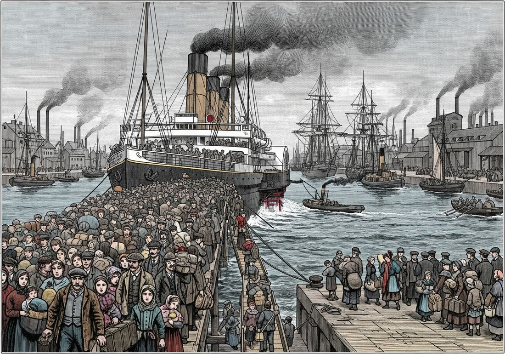

6.6 Causes of Migration in an Interconnected World from 1750 to 1900
- LO-A: Why people moved: push and pull factors — Migration in the 19th century was driven by both push factors (famine, poverty, displacement, political persecution) and pull factors (jobs, higher wages, land, opportunity). The Irish Famine (1845–52) killed or displaced 2 million people — a catastrophic push. American economic opportunity — factory wages, prairie farmland — pulled millions across the Atlantic. KC-5.4.I connects migration to demographic changes in both industrialized and non-industrialized societies. New transportation and urbanization —: Steam-powered ships cut transatlantic crossing times from 6–8 weeks to 10–14 days, dramatically reducing the cost and risk of long-distance migration. KC-5.4.I.B notes that new transportation modes led migrants increasingly to cities — the great urban growth of 19th-century America (New York, Chicago) and Europe (London, Manchester) was partly fueled by migration. Many migrants also returned home periodically, enabled by faster and cheaper transport.
- LO-B: Explain how various economic factors contributed to varied… — Free vs. coerced migration — a critical distinction —: KC-5.4.II draws a sharp distinction between voluntary migration (KC-5.4.II.A: many individuals chose freely to relocate in search of work) and coerced migration (KC-5.4.II.B: the global capitalist economy continued to rely on enslaved people, Chinese and Indian indentured servitude, and convict labor). The AP exam tests whether you can identify and distinguish these two patterns. Indentured servitude and coolie labor — semi-coerced migration —: After the abolition of the Atlantic slave trade and slavery in the British Empire (1833), plantation owners in the Caribbean, South Africa, and Fiji imported workers under indenture contracts: 5–7 years of labor in exchange for passage, wages, and (sometimes) land. Chinese workers (“coolies”) were sent to the Caribbean, South America, and Southeast Asia under often brutal conditions. Indian indentured workers went to Trinidad, Fiji, Natal, and Mauritius. This was legally “voluntary” but often involved deception and coercion in recruitment.
Try each question before revealing the answer.
1. What is the difference between a “push” factor and a “pull” factor in migration? Give one historical example of each from the period 1750–1900.
2. How did steam-powered transportation change the nature of migration in the 19th century?
3. British engineers and geologists went to South Asia and Africa in the 19th century, while Irish peasants went to the United States. Both are classified as “migration” — but what does this comparison reveal about the different character of migration flows in the imperial age?
4. Chinese and Indian indentured workers were legally “voluntary” migrants under contract. Why did the CED classify indentured servitude alongside enslavement as “coerced and semi-coerced” migration?
5. The Irish Famine killed approximately 1 million people in Ireland even as food was being exported from Ireland to Britain. What does this suggest about the relationship between colonialism and migration?
- Explain how various environmental factors contributed to varied patterns of migration from 1750 to 1900
- Explain how various economic factors contributed to varied patterns of migration from 1750 to 1900
Tap a term for its definition.
-
Definition: Push factors drive people away from their home society (famine, war, poverty, political persecution). Pull factors attract migrants to a destination (jobs, land, higher wages, family connections). Significance: The standard framework for analyzing the causes of migration; most 19th-century migrations involved both push and pull factors operating simultaneously.
-
Definition: A pattern in which early migrants from a community establish themselves in a destination and then facilitate the migration of relatives and neighbors, creating a sustained flow between specific origin and destination communities. Significance: Explains why specific immigrant groups clustered in particular cities and neighborhoods; Italian immigrants in Buenos Aires, Irish in Boston, Chinese in San Francisco.
-
Definition: A labor system in which workers signed contracts committing them to 5–7 years of labor for an employer in exchange for passage, food, and wages. Used primarily to replace enslaved labor in British Caribbean, South African, and Pacific colonies after 1833. Significance: Brought Chinese and Indian workers to Trinidad, Fiji, Natal, and Mauritius; classified as “semi-coerced” because contracts were often obtained through deception and working conditions were exploitative.
-
Definition: A catastrophic famine caused by potato blight that killed approximately 1 million Irish people and caused 2 million to emigrate, primarily to the United States, Canada, and Australia. Made worse by British colonial economic policies. Significance: The CED’s primary example of Irish migration; demonstrates how colonial economic relationships could create the push factors driving mass migration.
-
Definition: A term (often derogatory) for Chinese and other Asian indentured or contract workers exported to the Americas, Pacific, and Southeast Asia in the 19th century to work on plantations, railways, and mines. Significance: Represents the semi-coerced migration pattern (KC-5.4.II.B); Chinese workers built the U.S. transcontinental railroad under brutal conditions; others went to Caribbean sugar plantations after British emancipation.
-
Definition: The process by which increasing proportions of a population move to and live in urban areas. Significance: KC-5.4.I.B notes that new modes of transportation led migrants — both internal and international — to relocate increasingly to cities, contributing to the “significant global urbanization of the 19th century.” Industrial cities grew explosively: London grew from 1 million (1800) to 6.7 million (1900).
-
Definition: The pattern of migrants returning, either temporarily or permanently, to their home societies. Enabled by faster and cheaper steam transportation. Significance: KC-5.4.I.B specifically notes that new transportation allowed for “many migrants to return, periodically or permanently, to their home societies” — a significant departure from the essentially one-way migration of earlier periods.
-
Definition: The use of convicted criminals as forced labor, often transported to distant colonies. Britain transported over 160,000 convicts to Australia between 1788 and 1868. Significance: The CED lists convict labor as one form of coerced and semi-coerced labor migration (KC-5.4.II.B); Australia’s early European settlement was substantially built by convict labor.
🚢 The Scale of 19th-Century Migration: Something New
The 19th century witnessed migration on a scale unprecedented in human history. Between 1820 and 1920, approximately 60 million people left Europe for the Americas, Australia, and South Africa. Millions more moved within Asia — from China and India to Southeast Asia, the Pacific, the Caribbean, and East Africa. Tens of millions moved internally within industrializing nations from rural areas to urban factory centers.
What made this possible? Two revolutions: the transportation revolution (steam ships, railways) that dramatically reduced the cost and time of long-distance travel; and the economic revolution of industrial capitalism, which created both the demand for labor in industrial and plantation zones and the poverty and displacement that pushed people out of traditional agricultural communities. The CED organizes the causes of this migration into two categories: environmental/demographic factors (LO-F, KC-5.4.I) and economic factors (LO-G, KC-5.4.II).
📈 Demographic and Environmental Push Factors
Population growth was the fundamental demographic driver. Europe’s population roughly doubled between 1750 and 1850 (from ~140 million to ~270 million), driven by agricultural improvements, the potato (introduced from the Americas), and declining mortality. This population growth exceeded agricultural land availability in many regions, creating a fundamental mismatch: too many people, not enough land and food. KC-5.4.I states directly that migration was influenced by changes in demographics in both industrialized and non-industrialized societies that “presented challenges to existing patterns of living.”
The most dramatic push factor was famine. The Irish Famine (1845–52) killed approximately 1 million people and caused 2 million to emigrate within a few years — from a population of 8 million. The famine was caused by a potato blight that destroyed the Irish peasantry’s staple food crop. But it was made catastrophic by British colonial economic policy: landlords continued evicting peasants who couldn’t pay rent; the British government adhered to laissez-faire principles and refused to halt food exports from Ireland or provide adequate relief. Irish emigrants flooded into Boston, New York, Philadelphia, and Liverpool, creating the large Irish-American and Irish-British communities that persist today.
🏙️ New Transportation and the City-Bound Migration
Steam-powered ships and railways fundamentally changed migration patterns. A transatlantic crossing that had taken 6–8 weeks by sailing ship now took 10–14 days by steamship — and the cost of passage fell dramatically as competition grew and ships became more fuel-efficient. By 1900, steerage fares from Europe to New York were affordable on a month’s wages.
The CED highlights two specific effects of new transportation on migration (KC-5.4.I.B):
- Urban migration: Both internal and international migrants increasingly relocated to cities, because cities were where the industrial jobs were and where transportation connected them to the outside world. London grew from 1 million people in 1800 to 6.7 million in 1900. New York grew from 60,000 in 1800 to 3.4 million in 1900. This pattern contributed to what the CED calls “significant global urbanization of the 19th century.”
- Return migration: Faster and cheaper transportation made it possible for migrants to return to their home societies — periodically or permanently. The CED specifically lists Japanese agricultural workers in the Pacific, Lebanese merchants in the Americas, and Italian industrial workers in Argentina as examples of return migrants. Italian men often worked in Argentine factories or Uruguayan construction during the Southern Hemisphere summer and returned to Italy in the European summer — they were called “swallows” (golondrinas).

Steam-powered ships transformed migration by dramatically reducing crossing times and costs, making long-distance migration accessible to working-class families for the first time (Google Gemini, 2025), commercially licensed. Steam-powered ships transformed migration by dramatically reducing crossing times and costs, making long-distance migration accessible to working-class families for the first time (Google Gemini, 2025), commercially licensed.
💸 Economic Causes: Free and Coerced Migration
The CED draws a critical distinction between two types of economic migration (KC-5.4.II): freely chosen migration and coerced or semi-coerced migration. Both were driven by the global capitalist economy’s demand for labor, but the conditions under which people moved were profoundly different.
Freely chosen migration (KC-5.4.II.A): Many individuals chose voluntarily to relocate, often in search of work. The CED’s examples include British engineers and geologists going to South Asia and Africa (skilled professionals following colonial opportunities) and Irish migrants to the United States (though the Irish case blurs the line between “free” and “coerced” — famine refugees had little real choice). Italian workers in Argentina, Chinese merchants in Southeast Asia, and Lebanese traders in the Americas all represent broadly voluntary economic migration.
Coerced and semi-coerced migration (KC-5.4.II.B): The global capitalist economy continued to rely on forced and semi-forced labor migration. The CED identifies three main forms:
- Enslavement: The Atlantic slave trade was officially banned by Britain in 1807 and the U.S. in 1808, but illegal slave trading continued. Within Africa, enslavement and the Indian Ocean slave trade persisted throughout the 19th century. Even after emancipation in the British Empire (1833) and the Americas (U.S. 1865, Brazil 1888, Cuba 1886), formerly enslaved people faced economic coercion through sharecropping and debt systems that limited their freedom.
- Chinese and Indian indentured servitude: After British emancipation (1833), Caribbean and other plantation owners needed replacement labor. They turned to indentured workers from China and India, who signed 5–7 year contracts for passage and wages. Hundreds of thousands of Indian workers went to Trinidad, Guyana, Fiji, Mauritius, and Natal. Chinese workers went to Peru (guano islands), Cuba, the United States (transcontinental railroad), and Southeast Asia. Recruitment was often deceptive and working conditions were brutal.
- Convict labor: Britain transported over 160,000 convicted criminals to Australia between 1788 and 1868. This convict transportation served both as punishment and as a labor supply for colonial development — forced migration in service of imperial economic needs.
Nothing added yet. To attach a Google NotebookLM audio overview, video overview, or infographic to this topic: open this file — build/data/content/ap-world-history/6-6.json — and add an entry to notebookLmResources with a title and a shareable link (or paste an embed <iframe> directly into this block in the generated HTML file if you're editing the page by hand instead).
- Migration driven by demographic crisis partly created and worsened by colonial economic policies
- Coerced migration organized by the British government to relieve population pressure in Ireland
- Purely voluntary migration driven by economic opportunity in the United States
- Chain migration in which early Irish migrants attracted relatives by sending positive reports from America
- The Industrial Revolution reduced demand for migrant labor by automating most industrial jobs
- European governments used faster ships to enforce stricter controls on emigration
- New transportation modes enabled circular and return migration patterns in addition to permanent emigration
- Improved transportation primarily benefited skilled professional migrants rather than working-class laborers
- Freely voluntary migration, as workers signed legal contracts of their own accord
- A form of semi-coerced migration that replaced enslaved labor while preserving the plantation system’s need for controlled, bound labor
- Chain migration, as established Indian communities in the Caribbean attracted relatives from India
- An example of the British government’s commitment to improving labor standards in its colonies after emancipation
- New transportation technology enabled mass migration from cities to rural areas in search of land
- International migration was primarily circular, with most migrants eventually returning to their countries of origin
- Population growth in industrial cities was primarily the result of declining death rates rather than migration
- Both internal and international migrants increasingly relocated to cities, contributing to significant global urbanization (KC-5.4.I.B)
- Freely voluntary migration and equal treatment in a labor market that rewarded skill
- Semi-coerced migration under racially discriminatory conditions, consistent with the CED’s classification of Chinese labor migration as coerced or semi-coerced
- Return migration, as Chinese workers were temporarily employed before returning to China after railroad completion
- Chain migration organized through established Chinese communities in California who recruited workers from China
Answer parts A, B, and C. Each requires a separate short response. Do not write a full essay.
Part A
Briefly describe ONE specific way demographic or environmental changes contributed to migration patterns in the period 1750–1900.
Part B
Briefly explain the difference between freely chosen migration and coerced migration in the period 1750–1900, using ONE specific example of each type.
Part C
Briefly explain ONE way new transportation technology changed migration patterns in the period 1750–1900.
Write a full essay with a thesis, contextualization, evidence, and historical reasoning. Use causation as your primary skill. A strong response will engage with both categories of causes and argue a qualified claim about their relative importance.
📝 My Notes (edit this yourself — no AI needed)
This box is yours. Open this page's HTML file directly (in GitHub's editor or any text editor), find the <!-- MY-NOTES-START --> comment below, and type between the markers — corrections, extra context for this year's students, a link, anything. Changes show up as soon as you save and re-publish the file — nothing else on the page will change.
(Add your own notes, corrections, or extra context here.)